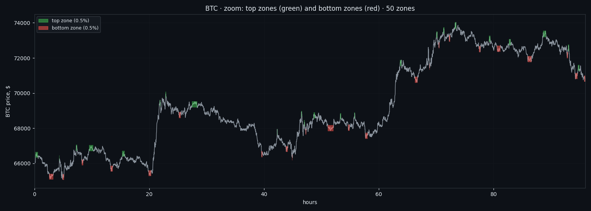
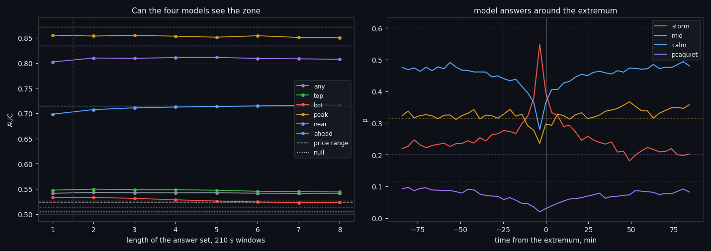
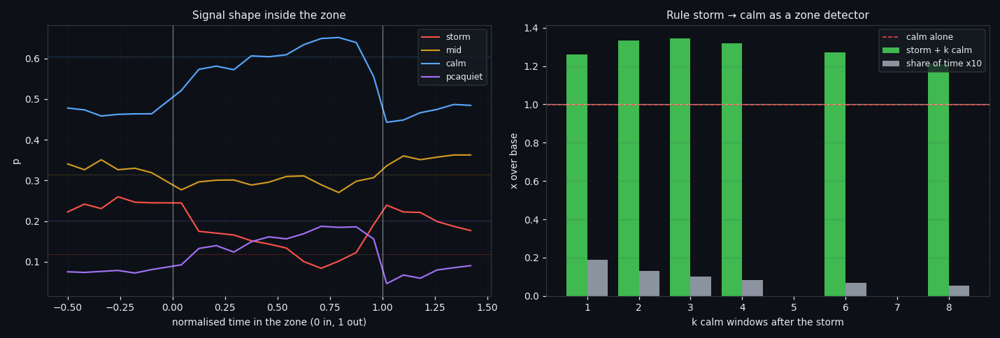
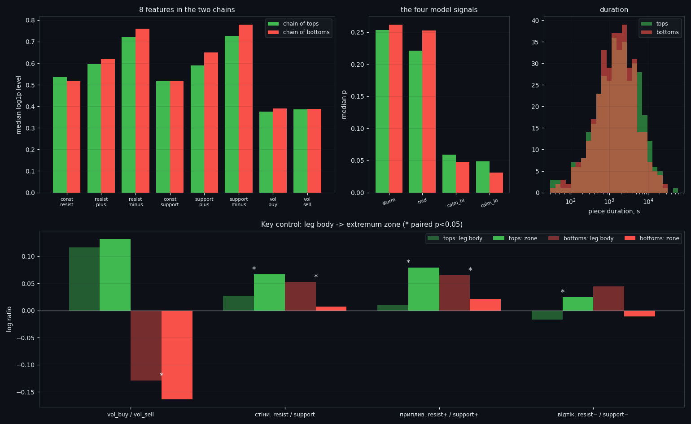
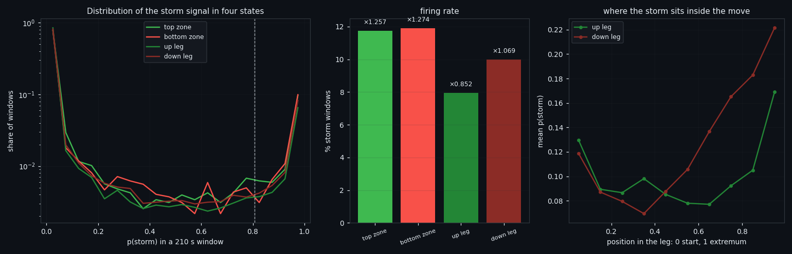
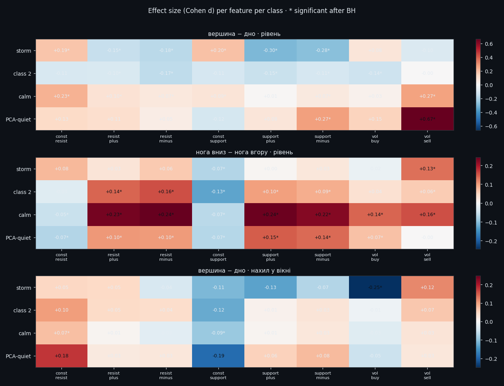
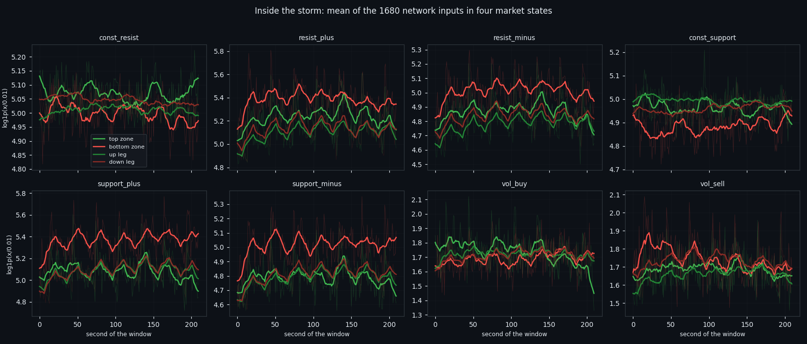

Local tops and bottoms in the order book: what four trained models actually see
We marked every local top and bottom on 171 days of per-second Bitcoin order-book data — 734 of them, defined by a rule rather than by hand — and asked four trained market-state detectors whether they can see them. The zone itself is invisible. The moment of the extremum is not, and neither is 'an extremum within the next hour'. But a plain price range from the same window beats the order book at both, and the honest edge turns out to live somewhere else entirely: in telling a top from a bottom when price itself has nothing to say.
Full walkthrough — streamed from YouTube.
① What we marked, and why exactly this way
A local top is not a point on a chart — it is a place where price stops going up and starts going down. To find those places without hand-picking them, we use a ZigZag with a 1.0% threshold: a new extremum is registered only once price has moved away from it by at least that much. By construction, both legs — to the previous extremum and to the next one — are at least 1.0% long, and we verify both explicitly, so the first and last pivot (whose legs are unfinished) are dropped.
A zone is not the pivot itself. It is the longest continuous stretch around the extremum during which price stays inside a 0.5% band of it: for a top, not lower; for a bottom, not higher. That gives every extremum a duration, and duration turns out to matter more than anything else in this study.
On our slice — BTC, 171.0 days of per-second order-book data — that produced 734 zones: 367 tops and 367 bottoms, 4.29 a day, covering 15.02% of all time. The median zone lasts 1598 seconds; the shortest is 0, the longest 59083.
Two details that decide whether the whole thing is honest. First, price is taken from **real observations only** — 18% of our seconds are missing, and interpolating them manufactures fake local extrema exactly inside the gaps. Second, top zones and bottom zones cannot overlap: with legs of 1% and a band of 0.5%, the upper edge of a bottom zone is always below the lower edge of a top zone. That is arithmetic, not luck — but we still checked it, and found 0 overlaps.

② What it looks like up close
Zoomed in to a few days, the structure is obvious to the eye: green boxes sit on the tops, red boxes on the bottoms, and between them are the legs — the moves of at least 1% that connect one extremum to the next.
This picture is not decoration. It explains half of the results that follow. In a strong trend there are almost no zones, because price never comes back into the band. In a range they cluster into grapes. Any statement about "how often the market is at an extremum" is really a statement about how trending the period was.

③ Can four trained models see a zone?
We have four market-state detectors from a separate line of work: storm, class 2, calm and PCA-quiet. Each takes the raw 8x210 matrix of one 210-second window and returns a probability. The question of this study: given those four answers — for one window, or for up to eight consecutive windows — can you tell that you are standing in a zone?
Every number below is measured against two yardsticks, and without them none of it means anything. The first is a null control: the model answers are circularly shifted in time, which destroys the link to the market but keeps their autocorrelation. The second is plain price from the same window. Validation is by 12-hour blocks with a one-hour embargo, because neighbouring windows correlate at about 0.76 and a random split would inflate everything.
| task | four models | null | price range | |---|---|---|---| | inside any zone | 0.545 | 0.505 | 0.523 | | the moment of the extremum | 0.859 | 0.526 | 0.872 | | extremum within 3.5 minutes | 0.826 | 0.504 | 0.834 | | an extremum in the next hour | 0.748 | 0.506 | 0.715 | | top versus bottom | 0.527 | 0.500 | — |
The answer splits into three. The zone itself is invisible — it lasts tens of minutes and for most of that time the market is simply asleep, so the label smears a short burst over a long stretch. **The moment of the extremum is marked sharply**, and there is even a genuinely predictive part: "an extremum will happen in the next hour" scores 0.748 against a null of 0.506.
And then the honest part. A plain price range from the same window scores 0.872 on that same moment — it beats the order book — and putting them together adds about +0.005 AUC. The one place where the two are not interchangeable is direction: price position (its percentile over the trailing 24 hours) scores 0.689 on "top or bottom" but only 0.566 on "is this a zone at all". Price tells you the side. The order book tells you the moment.

④ Where the real hooks are
Instead of one question we asked five, and the useful answers are all in the details.
The order book marks the edges of a zone, not the zone. Inside a zone the storm probability starts high, collapses below baseline in the middle, and rises again at the exit. That makes sense: a zone is bounded by two moves of at least 1%, one arriving and one leaving, and those are what the model sees.
It only works on sharp zones. At the level of whole zones rather than windows, the storm signal touched 50% of all 734 extrema in exactly their own window, where chance would give 10%. But split by duration: the tercile of short zones (median 462 s) is covered 57% of the time, while the tercile of long ones (median 5059 s) is covered only 18% — worse than the 25% you would get at random. A spike is detectable. A slow plateau is not.
Sequence beats a single reading. The rule "a storm window, then k quiet ones" fires 0.5% of the time and multiplies the chance of being in a zone by 1.208. Calm on its own, without a storm before it, gives 0.997 — nothing. And the same sandwich built on price range at the same firing rate gives only 1.02-1.29. This is one of the few places in the whole study where the order book is genuinely ahead of price.
One trap worth naming. Ninety within-window descriptors predict "top or bottom" at AUC 0.91, which looks like a breakthrough until you check price: price alone gives 0.994, and price plus order book gives the same 0.994. The descriptors were re-reading the direction of the impulse from flow asymmetry. Every apparent edge in this field needs a price yardstick standing next to it.

⑤ Two chains: everything after which price fell, against everything after which it rose
We stitched all the top pieces into one chain and all the bottom pieces into another, then compared them feature by feature. The trap here is that feature levels drift across months far more than they differ between tops and bottoms, so every comparison is done pairwise — each top against its neighbouring bottom, which sits hours away rather than months — with a Benjamini-Hochberg correction on top.
The strongest difference is trade volume: buys dominate at tops, sells at bottoms, by a wide margin. And it is worth nothing, which we only learned from a second control: for every piece we took a piece of equal length from the middle of the leg that led into it. Against that control the volume asymmetry at a top does not move at all (delta +0.001, p=0.96). Buyers at the top are buying exactly as they were on the whole way up. There is no exhaustion; the asymmetry is a shadow of the trend.
What does survive the control is the walls. Inflow to the resistance side runs at +0.010 in the body of a rise and jumps to +0.079 inside the top zone; on the way down it runs at +0.065 and drops to +0.021 inside the bottom zone. Two shifts in opposite directions, both significant. The mechanism is the plainest one imaginable: at a top the sellers' wall grows, at a bottom the buyers' wall does. Something gets in the way, and the move stops.
Size, honestly: about a 7% shift in log ratio. On the task of telling an extremum piece from a mid-leg piece it is worth 0.579, while price (move plus range) is worth 0.919 — and price plus order book is still 0.919. This is a confirming feature, not a signal on its own. Tops also last measurably longer than bottoms: a paired difference of +91 seconds.

⑥ The same signal in four different market states
Every 210-second window belongs, by its midpoint, to one of four states: a top zone, a bottom zone, the body of an up leg, or the body of a down leg. The distribution of the storm probability is strongly bimodal — the median is near zero everywhere and the mass sits at the edges — so what has to be compared is the firing rate, not the median.
| state | share of time | storm fires | vs base | |---|---|---|---| | bottom zone | 7.2% | 11.9% | x1.274 | | top zone | 7.9% | 11.7% | x1.257 | | down leg | 39.9% | 10.0% | x1.069 | | up leg | 44.6% | 8.0% | x0.852 |
Tops and bottoms are indistinguishable — that is now the fourth independent way we have got the same result. Down legs against up legs, however, differ significantly and survive the within-day correction: falls are stormier than rises. Note where that directional tilt lives — in the body of the move, not at its ends.
Along a leg the profile is U-shaped: the storm sits at both ends of a move and goes quiet in the middle, and on the way down it ramps up earlier and more steeply than on the way up.
Read backwards, this is the entire practical value of the signal. When the storm detector fires, the chance of being in an extremum zone rises from 15.1% to 19.1%, and among legs the share of "down" rises from 47.2% to 52.8%. Three percentage points of directional tilt, against a round-trip fee of 0.30%, is not tradeable — and saying so is more useful than dressing it up.

⑦ Inside the classes: the 1680 numbers the network actually sees
So far we compared what the network said. Here we compare what it saw: the 8x210 matrix in exactly the form it is fed in. For each of the four targets we take only its own windows and ask whether a storm at a top differs from a storm at a bottom — and whether the difference is in levels or in the shape inside the window.
Each class answers differently, and that is the point:
- storm separates tops from bottoms only by its walls: const_support +0.25, const_resist +0.17; - class 2 has all six flows lower at tops — the book is busier at bottoms; - calm shows vol_sell +0.27 together with const_resist +0.23: in a quiet window at a top there is simultaneously a thicker sellers' wall and more selling; - PCA-quiet pushes that same signature to vol_sell +0.67, the largest effect in the entire study, though on only a few hundred windows.
Shape works in exactly one class. Inside storm windows the slope of vol_buy differs at d = -0.23: at a top, buying fades across the 210 seconds; at a bottom it builds. In the quiet classes the slopes are empty — in a still window there is nothing to tilt, and all the information is in the level.
And the single most important number in this article: on "top or bottom", price inside the same window scores 0.498 for storm, 0.459 for class 2, 0.484 for calm and 0.419 for PCA-quiet — nothing at all, in all four. The order book scores 0.52 to 0.59. It is modest, but it is not a shadow of price, and it now replicates across four independent subsamples. In an extremum price does not move for 210 seconds, so it has nothing to say; the book still does.

⑧ What this adds up to, and what comes next
We have found classes, and they are real: found without supervision, reproduced by a second independently written pipeline, and detectable by trained models with out-of-fold AUC in the high 0.9s. That is the foundation for something practical — an automated system for analysing the market state, which is what all of this was leading to.
We also see, plainly, that the classes behave differently in different market periods. The share of each class drifts across months; the same detector fires 3.8% of the time in one month and 17% in another. That is not a defect. It means the classes can be split into subclasses that describe the current state of the market — not forecasting anything, but making change itself observable. That drift is visible right on the charts of this study: the class-share panels move together with the regime of the market, and the last figures make it unmistakable.
Everything in this project so far was done to learn — to find out what is in this data and, just as often, what is not. That part can now acquire a practical side: an automatic market state detector, running continuously, telling you which state you are in and when it changes.
And we have built all of it so that you do not have to take our word for anything. Every study ships with a research diary that is an executable recipe: take your own data, run the commands in order, and get the same classes, the same numbers, the same trained models. Every user can reproduce these experiments and verify them personally.
Stay with us and follow the articles that come next — they will have practical applications.
The research diary of this study is published together with this article: every command, every control, every tolerance and the complete code. The four market-state detectors used here are not our work in this study — they come from an earlier one, and that study has its own article and its own diary: There Are No Classes in the Order Book.

If this changed how you read the tape, the natural next step is Four Market States, Found Twice by Two Independent Pipelines — Four market states, found twice by two pipelines that share no code.
Four Market States, Found Twice by Two Independent Pipelines
Four market states, found twice by two pipelines that share no code.
There Are No Classes in the Order Book — Only One State That Survives
We locked a 210-second window to its own 1,680 numbers — eight order-book features, no norm, no price, no clock — and asked whether the market….
Volume Is the Fuel — Not the Steering Wheel
We recorded the Binance order book every second for six coins over five months and ran eighteen tests on what volume really does.
About Market Research Lab — What We Collect and Why
Most market commentary is storytelling.
Comments
Discussion is powered by GitHub. Enable it by adding secrets/giscus.json (repo IDs from giscus.app).